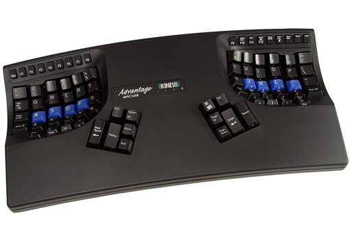
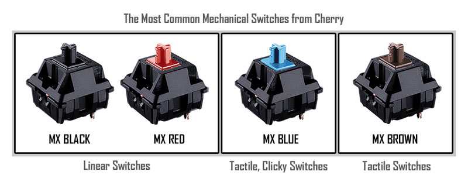

Welcome to my blog!
June 4, 2016
Over the years, I've realized that there are many memories and topics I'd like to be able to accurately recall and describe, but am unable to do so. Writing these down allows me to come back to previous topics and pick up where I left off. The columns on the right are sorted in reverse chronological order. They are a collection of my thoughts, experiences, and interesting articles.
Ergonomics
June 4, 2016
Caring about ergonomics is probably one of the most beneficial things you can do if you're often on the computer. As a high schooler, several people I knew developed carpal tunnel before they'd even turned 18. Hours of gaming and staring at screens leaves many with hunched backs, wrist pains, and an inability to perform. There are four main components that drastically changed my productivity and improved my comfort while coding.
1: The Kinesis Advantage: There are two types of keyboards - mechanical keyboards and membrane keyboards. Membrane keyboards are extremely popular due to their low cost and simple manufacturing. In fact, most laptops have membrane keyboards. Technically speaking, these keyboards work by detecting which locations are pressed down, and sending corresponding keyboard inputs to the computer. This also means that there exists an extremely low number of keys that can be pressed at a time while having all inputs register in the computer. This is called n-key rollover, the number of key presses that can be registered at a time. Macbook Pros have 2-key rollover. On the other hand, mechanical keyboards work by having a separate switch for every single key. This results in many more keys being registered at once, often reaching up to 12+ at a time (better for gaming). Switches also last much longer than membranes, often allowing users to reach around 50 million presses, while membrane keyboards allow around 1 million key presses. Switches are better ergonomically, because they allow you to use minimal energy to register each key press instead of 'bottoming out', which is when someone presses the key all the way down in order to register a click.
The Kinesis Advantage has two other significant advantages. It is created with two wells, one for each hand such that each is in a natural position. The keys are set up in columns so each key is exactly where you would expect it to be naturally. This serves to minimize the amount of strain needed when typing. The distance between wells is also approximately that of shoulder width so the user isn't forced to push their arms together, thus rotating their arms. Finally, the keyboard has extra keys for the thumb to use in order to better optimize how we use each finger. For example, my left thumb's key is currently mapped to backspace, along with control, alt, and more.
 There are four main types of switches - red, blue, black, and brown. At a high level, these have different tactile resistances and vary in optimal usage. Some are better for gaming while others are better for typing. At the end of the day, I recommend trying all of them out at Frys or another electronics company before buying, since good keyboards can easily be upwards of 100 USD. Personally, I prefer Cherry Blues but use Cherry Browns, as they are the default for the Kinesis Advantage. More information can be found at www.keyboardco.com/blog/index.php/2012/12/an-introduction-to-cherry-mx-mechanical-switches/.
2: Standing Desks Overall, increased amounts of moment are better for working at the computer - some advise to stand and walk around for 1-2 minutes every 20 minutes, and others recommend standing all the time when working. All in all, I've found this: (http://ergo.human.cornell.edu/CUESitStand.html) to be a strong overview of the healthiest option. In short, try alternating between standing and sitting, with the occasional walk. Standing desks make this easy, since you can trivially modify the height of your workstation.
3: Vertical Mouse 4
 Mouses, as the other main peripheral, also play a large role in ergonomics. Normal mouses require internal rotation, which hurts forearms over a long period of time.
With a vertical mouse, this doesn't happen since the position is more natural. Imagine for instance that you are walking with your arms at your sides. Raise them up normally,
and you will find that a vertical mouse allows you to maintain this natural handshake position.
Although I am currently using the Vertical Mouse 4 from Evoluent, but also recommend the Etekcity Vertical Mouse.
Mouses, as the other main peripheral, also play a large role in ergonomics. Normal mouses require internal rotation, which hurts forearms over a long period of time.
With a vertical mouse, this doesn't happen since the position is more natural. Imagine for instance that you are walking with your arms at your sides. Raise them up normally,
and you will find that a vertical mouse allows you to maintain this natural handshake position.
Although I am currently using the Vertical Mouse 4 from Evoluent, but also recommend the Etekcity Vertical Mouse.
4: Keyboard Layouts
Through multiple studies, typing speeds surprisingly have little to no correlation to typing layouts and how many fingers are utilized. The only factor strongly related to typing speed is the amount of time spent on the computer. Ultimately, I highly recommend learning a new keyboard layout to see if you enjoy it more. If you are interested in learning to use Dvorak, I recommend this tutorial site. Lastly, here are some arguments against Dvorak.
There are other improvements to be made. Many keyboards have staggered keys because of path dependency. In other words, typewriters needed staggered keys for the mechanical linking between levers and keys. This is elaborated here. Even then, non-staggered layouts can be detrimental. Since a keyboard's width is less than that of your shoulders, your arms are naturally angled inward. The best option is to find a keyboard that accomodates for this.
VIM: VIM is an extended conversation in and of itself, but has become a core component of my workflow and helped me streamline the process from idea to implementation. The page on VIM can be found in the sidebar.
VIM
Your problem with Vim is that you don't grok vi.Jim Dennis
June 5, 2016

When I first started learning to use vi, I thought it was worthless. Who could possibly become comfortable using such a dysfunctional editor? I heard
from others that when you start living and breathing vi, you'll know because you'll be cursed - you'll start wishing to use the shortcuts everywhere, but I laughed
at the thought. Today however, I realize beyond a doubt that this is definitely true.
Throughout the rest of the page I'll be using vi and vim interchangeably,
as I don't use a significant amount of the extra features from vim (vi improved) to warrant solely using that name.
For the uninitiated, Vi is a text editor on command line, or the terminal. A text editor is anything you use to manipulate text, such as Microsoft Word or perhaps Notepad. Vi is significant because it is a universal standard on every UNIX-based machine (OSX, Linux, Solaris, etc) and is pretty much guaranteed to be on every non-windows computer you ever use. Luckily, most programmers don't use windows and most application are developed for UNIX-based OS's at some point in time (usually pretty early). Vi is unique because it is a Modal Editor. By that, I mean that pressing the same keys might have different results depending on which mode is on. Typically for instance, imagine opening up a new NotePad document and typing, only to realize that nothing is showing up. This is actually what happens in Vi because by default, when it first opens, the user is placed in Normal Mode, which is meant for moving around text. Early on, developers realized they spent just as much time editing text as they did traversing it, and therefore dedicated an entire mode to doing so. As you can imagine, Vi is 40 years old, as it was created in 1976, and used by countless people worldwide. I will frequently refer to a file called the vimrc. This is vi/vim's configuration file. Mine can be found here. As you can imagine, vi is incredibly complex and learning to harness its power will be extremely beneficial overall but first, some backstory.
When I first learned to code in high school, I used a relatively simple and lightweight IDE (Integrated Development Environment) - JCreator. As simple as it was, JCreator let me refactor, highlight syntax, pointed out compile errors, and more. Upon reaching college however, I was told to use a terminal text editor along with gcc. I frequently thought to myself, "how could college be so primitive?" and slowly came to terms with the fact that I'd just have to slowly code in Terminal.
Exiting vim
Grok Vim vim and emacs Reddit on VIM Why I use Vim ReferenceThe Lifted Workflow
June 11, 2016
The Lifted Workflow is a computer configuration designed to help the user improve efficiency through eliminating mouse usage.
Sometime in high school, I watched this Pixar short.
Life
Asking Friends
Optimizing Break and School
June 11, 2016
Every summer as a child, I realized that I'd become increasingly introspective as break progressed and the imminence of school faded away.
Classes made life simple - pick classes you're somewhat interested in, learn the material, score well on tests. Rinse and repeat. However, during breaks
I realized I was living an interview question, and I had no idea what my answer was.
“If you had no financial burders to worry about and no
responsibilities to attend to, what would you do?”
In the heat of the moment I'd say to travel, maybe to Europe or Asia, but now with the time
but without the money, what do I do? On the surface, the answer was easy, or at least for the first few weeks. People I haven't seen in months would be coming in and out of town,
visiting old friends and relatives, and we would meet up to catch up and hang out. Before long, my interest in doing so would die down, and I'd start pondering everything...
my choice in friends, my true personal hobbies, and wonder how a time I'd looked forward to so intensely during finals was in reality so painfully dull.
Several days ago, I noticed a trend in my breaks. As soon as I hit a point where none of my friends were available to hang out, I'd look for things to do at home - maybe find old toys and reminisce or pump up my old basketball and shoot for a few hours. No matter what I did, I'd gravitate to a nearby coffee shop and find something to read or learn on the computer. It was during these times when my breaks would really fly by and before long, school would start again. During this process, I realized two things. First, what you choose to do when you have the option to do anything is your genuine interest uninfluenced by parents or friends. Second, there is a transition period from break to school, and school to break. It's fully possible to minimize these transitions, so you can spend more time doing what you really want.
Summer of 2015, I reflected on my freshman year of college - the year I'd just completed, and realized I had wasted an entire year. I had spent my days watching movies and playing games, and hadn't met anyone significantly interesting, or tried anything worthwhile. As this sank in, it hit me - if I spent all four years as I did my first, future Vincent would be absolutely disgusted with college Vincent. College is a time to try new things, meet new people, and develop new hobbies - all the ones there wasn't time for in high school. Luckily, break gives some time outside of work for you to carry out everything crazy planned from during the school year, and gives time to plan for new things to try during the school year.
Morality
Asking Friends
Critical Thinking
Asking Friends
Work-life Culture
Asking Friends
Artificial Intelligence
Asking Friends
Efficiency
Asking Friends
How to Learn
Asking Friends
The Organized Mind
Asking Friends
My Experience with Fraternities
Asking Friends
Cyberlaw
Asking Friends
Davis & Berkeley
Asking Friends
The Advent of the Blockchain
Asking Friends
Puzzle Rooms
Asking Friends
Matrix
Asking Friends
Davis Reloaded
Asking Friends
Asking Friends
CITRIS, the Center for Information Technology Research in the Interest of Society hosts mobile application competitions each year at well-known universities.
Asking Friends
Asking Friends
Asking Friends
Asking Friends
Rogaway seminar grad retired
Asking Friends
Asking Friends
Asking Friends
Asking Friends
Asking Friends
Asking Friends
Asking Friends
Asking Friends
Asking Friends
Asking Friends
Asking Friends
Asking Friends
Asking Friends
Asking Friends
Asking Friends
CCCLXXVI
Asking Friends
Mountain Biking
Asking Friends
snowboarding
Asking Friends